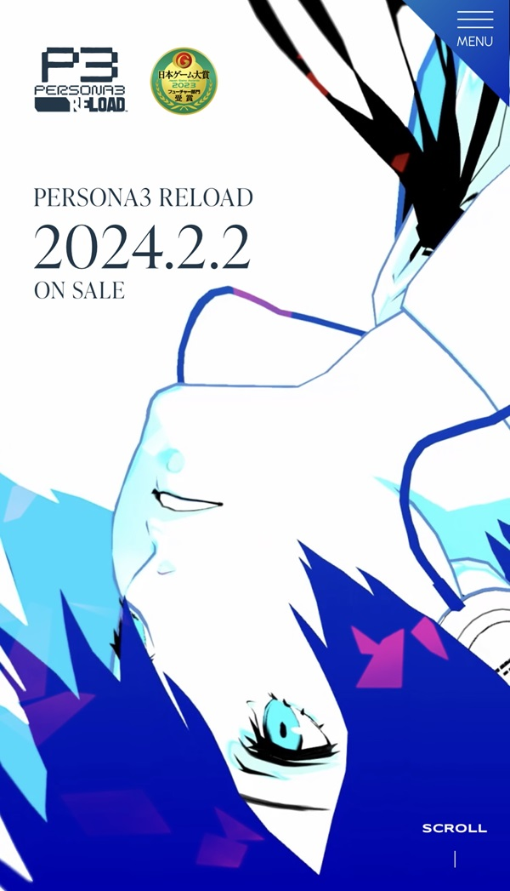

Visual Hierarchy
IMDB

IMDB's homepage does an excellent job of making it clear what it wants the user to see first: the trailers. Not only are they featured at the top, but they are larger than the other elements of the page. Next in importance is the "Featured today" section, shown just below the trailers as if to say "Once you've seen the latest trailers, come take a look at what we've picked out for today." Additionally, throughout the homepage the movie posters are shown more prominently than any of the text, since images tend to draw more attention (and interest) than text.
White Space and Clean Design
Google's homepage is the epitome of white space and clean design. The site leaves a large amount of space open, which serves to draw the eye to the most important element of the page: the search bar. With great visual organization, the clutter-free design makes it easy to distinguish the different sections and functions located in the upper-left, upper-right, center, and bottom of the screen. It would be hard to make a cleaner design with more white space than this.
PARC: Contrast
Persona 3 Reload
This design uses contrast to great effect. Text in the white area is written in black to ensure it stands out, while text in any blue portion of the screen is written in white. While there are multiple shades of blue in use, the only blue that serves as a background for text is dark, making the white text easy to read. The character is also drawn in such a way to use contrast to stand out; rather than coloring in the character's skin, the artist used the white space as the skin, which further emphasizes the colored details of the face and head.